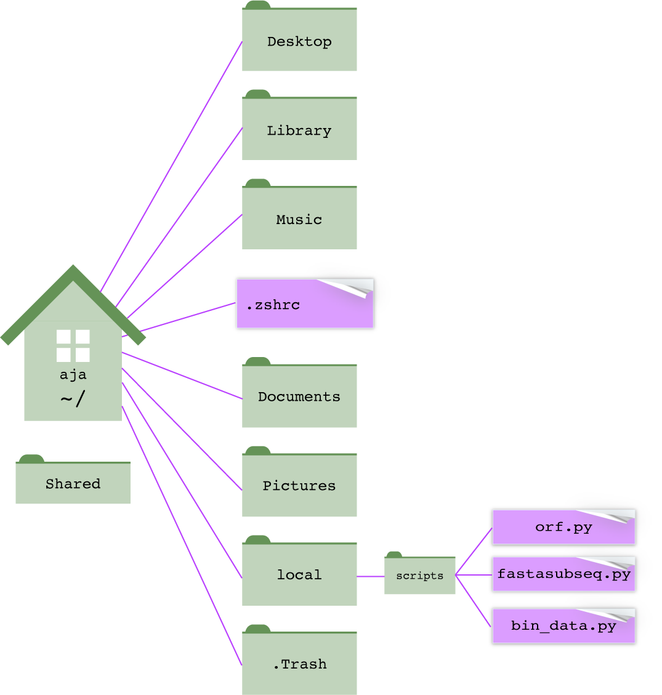

Chapter 2 Tailoring your shell
In this chapter
- where the programs you run actually live, and how the shell finds them (your
$PATH) - how to make your own scripts runnable from anywhere
- the shell’s configuration files (
.zshrc,.bashrc, and.bash_profile), and which one to use - how to make aliases (keyboard shortcuts) for commands you use a lot
- how to add color, a longer history, and a safety net against overwriting files
2.1 Where are executable programs installed?
When you type ls, the shell runs a program called ls. That program is a
file, sitting in a directory somewhere on your computer. So where is it, and
how did the shell know where to look?
2.1.1 which and type
which tells you where a command lives on the file system:
/bin/ls
/usr/bin/less
/opt/miniconda3/bin/python3So ls is the file /bin/ls. You could run it by typing its full path, and
it would do exactly the same thing:
Now try which cd. In Zsh, you’ll get cd: shell built-in command. That’s
because cd isn’t a program at all: it’s built into the shell itself (Section 1.3). type tells
you what kind of command something is, whether it’s a builtin, a program, or
an alias (Section 2.3):
cd is a shell builtin
ls is /bin/ls2.1.2 The $PATH variable
The shell finds programs using a variable called PATH, a list of
directories separated by colons:
/opt/homebrew/bin:/usr/local/bin:/usr/bin:/bin:/usr/sbin:/sbinYours will look different. Colons are hard to read, so here’s a trick to print
one directory per line. This is the PATH on the computer that built this
book:
/opt/miniconda3/bin
/opt/miniconda3/condabin
/opt/homebrew/bin
/opt/homebrew/sbin
/Users/aja/perl5/bin
/usr/local/bin
/System/Cryptexes/App/usr/bin
/usr/bin
/bin
/usr/sbin
/sbin
/var/run/com.apple.security.cryptexd/codex.system/bootstrap/usr/local/bin
/var/run/com.apple.security.cryptexd/codex.system/bootstrap/usr/bin
/var/run/com.apple.security.cryptexd/codex.system/bootstrap/usr/appleinternal/bin
/opt/X11/bin
/Users/aja/local/bin
/Users/aja/local/src/scripts
/Users/aja/.local/bin
/Users/aja/local/src/phylogenomic_dataset_construction3/scripts3
/Library/Frameworks/Python.framework/Versions/3.6/bin
/Users/aja/Library/Python/3.7/binWhen you type a command, the shell:
- checks whether it’s an alias, a shortcut name you’ve defined for a
longer command (Section 2.3), or a builtin, a command built
into the shell itself, like
cd(seetype, above); - if it’s neither, looks in each directory in your
PATH, in order, for a program with that name; - runs the first one it finds.
If it doesn’t find the program in any of those directories, you get the dreaded message:
zsh: command not found: blastnThis means “I looked in every directory in your PATH, and no program has
that name.” Either the program isn’t installed, or it is installed but in a
directory that isn’t in your PATH.
2.1.3 Order matters
You can have several programs with the same name in different directories.
which -a lists all of them, in the order the shell searches:
/opt/miniconda3/bin/python3
/opt/homebrew/bin/python3
/usr/bin/python3This computer has three different python3 programs: one from conda, one from
Homebrew, and one from Apple. Typing python3 runs the first one, the conda
version, because /opt/miniconda3/bin comes first in the PATH. This is
the source of many “but it works on my computer!” mysteries. When a program
behaves unexpectedly, which is one of the first things to check.
Package managers edit your PATH. When you install conda or Homebrew,
the installer adds lines to your shell’s configuration file (Section
2.2) that put its directories at the front of your PATH.
That’s how conda’s python3 wins in the example above.
2.1.4 Why ./script.sh?
This also explains why you have to type ./ to run your own script (Section
1.15). The current directory (.) isn’t in your PATH, so
the shell won’t look there unless you give it the path to the script
explicitly. (Leaving . out of the PATH is deliberate. It keeps a
malicious program named, say, ls in some directory you cd into from
running when you type ls.)
2.1.5 Changing the PATH
PATH is a variable, so you can change it like any other variable (Section
1.12.1). To add a directory, include the current value,
$PATH, plus the new directory, separated by a colon:
export PATH="$PATH:$HOME/local/scripts" # add to the end: searched last
export PATH="$HOME/local/scripts:$PATH" # add to the front: searched firstexport makes the variable available to programs that the shell runs, not
just to the shell itself. PATH needs it.
Adding to the end is the safer choice: your directory is searched last, so nothing in it can accidentally replace a standard command. Add to the front only when you specifically want your version of a program to win.
Don’t forget the $PATH. What’s the difference between these two lines?
The first adds a directory to your PATH. The second replaces your
entire PATH with a single directory, and suddenly nothing works:
bash: line 1: ls: command not found
The shell can't find ls anymore.If this happens, don’t panic. A change typed at the command line only lasts
until you close the Terminal window, so just open a new one. If the bad line
is in a configuration file, open a new window anyway and fix the file by
calling the editor by its full path (for example, /usr/bin/nano ~/.zshrc).
A PATH change typed at the command line lasts only for the current Terminal
window. To make it permanent, put the export line in your shell’s
configuration file, which runs every time you open a new window. That’s the
subject of the rest of this chapter.
2.1.6 A home for your own scripts
As you write more scripts, you’ll want to run them from anywhere, just like
ls or grep, without typing ./ or a long path. The standard way to do
that:
- Make a directory for your scripts, such as
~/local/scripts. - Add that directory to your
PATH, permanently. - Put each script there, with a shebang line (Section 1.15)
and execute permission (
chmod u+x).

Figure 2.1: Keep your own scripts in one directory, like ~/local/scripts, and add that directory to your PATH. Then you can run orf.py from any directory, just by typing its name.
A common arrangement, borrowed from how Unix organizes its own files:
| Directory | What goes there |
|---|---|
~/local/scripts |
scripts you write yourself (Python, Bash, …) |
~/local/src |
source code and downloaded software |
~/local/bin |
executable programs you’ve installed or compiled yourself |
Add both ~/local/scripts and ~/local/bin to your PATH, and anything you
put in them is always available.
Exercise 2.1
- Use
whichto find wheregrep,sort,nano, andpython3are installed. Usetypeonecho,pwd, andcd. Which are builtins? - Print your
PATH, one directory per line. How many directories does the shell search? Which is searched first? - How many
python3programs are on your computer? Which one runs when you typepython3? - In a new Terminal window, run
PATH=/nowhere, then tryls,pwd, and/bin/ls. Explain what works, what doesn’t, and why. Then close the window.
2.2 The shell’s configuration files
Every time you open a Terminal window, the shell runs a configuration file
(sometimes called a startup file or “dotfile”) from your home directory.
Anything in that file, such as PATH changes, aliases, colors, and other
settings, is applied before you see your first prompt. There’s virtually no
limit to what you can set there.
These files start with a ., so they’re hidden. Use ls -a to see them:
2.2.1 Which file? It depends on your shell
First, find out which shell you’re using:
On a Mac, it’s almost certainly /bin/zsh, the default since 2019. On Linux,
including the computing cluster, it’s usually /bin/bash. Each shell reads
different files:
| File | Shell | When it runs |
|---|---|---|
~/.zshrc |
Zsh | every interactive shell: every new Terminal window or tab |
~/.zprofile |
Zsh | login shells only, before .zshrc |
~/.zshenv |
Zsh | every Zsh, even ones that run scripts |
~/.bash_profile |
Bash | login shells: logging in with ssh, and every window in Mac Terminal |
~/.bashrc |
Bash | non-login interactive shells: new windows in most Linux terminals, or typing bash |
2.2.2 Zsh: use ~/.zshrc
If you use Zsh (most Mac users), put your settings in ~/.zshrc. It runs
for every new Terminal window and tab, and it’s where you’ll find advice
online telling you to put things.
What about .zshenv? Some guides, and earlier versions of this course,
put PATH changes in ~/.zshenv. That works too, but on macOS a system file
that runs after .zshenv (/etc/zprofile) can reorder your PATH, moving
your directories behind the system’s. Setting PATH in ~/.zshrc avoids
that surprise.
2.2.3 Bash: .bash_profile vs. .bashrc
Bash is more confusing, because it reads different files depending on whether the shell is a login shell:
- A login shell is the first shell you get when you log in: when you
sshinto the cluster, for example. Bash runs~/.bash_profile. - A non-login shell is any other interactive shell: a new window in most
Linux terminal programs, or a shell started by typing
bash. Bash runs~/.bashrc. - To add to the confusion, the Mac Terminal app treats every new window as a
login shell, so Bash on a Mac reads
~/.bash_profile.
The usual solution is to put all your settings in ~/.bashrc, and have
~/.bash_profile read ~/.bashrc. Then your settings apply no matter how the
shell starts. Make sure your ~/.bash_profile contains these lines (on most
Linux systems, including the cluster, it already does):
2.2.4 In short
| You’re using… | Put your settings in… |
|---|---|
| Zsh (the Mac default) | ~/.zshrc |
| Bash on the cluster or Linux | ~/.bashrc (and check that ~/.bash_profile reads it) |
| Bash on a Mac | ~/.bash_profile, or ~/.bashrc read by ~/.bash_profile |
2.2.5 Editing your configuration file
Your configuration file is an ordinary text file, so edit it with nano or
any text editor. Make a backup first: a mistake in this file can make every
new Terminal window misbehave.
cp ~/.zshrc ~/.zshrc.bak # back it up (skip this if the file doesn't exist yet)
nano ~/.zshrc # edit it; nano creates it if it doesn't existChanges take effect in new Terminal windows. To apply them to the window
you’re in, source the file, which runs it in your current shell:
Lines starting with # are comments. To turn a setting off without deleting
it, “comment it out” by putting a # at the start of the line.
Don’t delete what you didn’t write. Conda, Homebrew, and other installers
add blocks to your configuration file, often marked with comments like >>> conda initialize >>>. Leave those alone, and add your own settings above or
below them.
2.3 Aliases
An alias is a shortcut: a short name that the shell replaces with a longer
command. Make one with alias name='command':
alias cl='clear'
alias cx='chmod u+x'
alias ll='ls -lh'
alias pin='ssh username@hpc-portal2.hpc.uark.edu'Now typing cl clears the screen, cx myscript.sh makes a script
executable, ll gives a long listing with human-readable sizes, and pin
logs you onto the cluster.
- There are no spaces around the
=, just like a variable. - Put the command in single quotes, especially if it contains spaces.
- Anything you type after the alias is added to the end of the command, so
cx myscript.shbecomeschmod u+x myscript.sh.
An alias typed at the command line lasts until you close the window. Put it in your configuration file to keep it.
alias # list all your aliases
type ll # what does this alias stand for?
unalias ll # remove an alias (for this session)A safety alias. Many people add alias rm='rm -i', so rm always asks
before deleting. It’s a good idea while you’re learning. The catch: you can
come to depend on it and then get burned on a computer that doesn’t have it.
To skip an alias once, put a backslash in front of the command: \rm file.
Aliases work only when you’re typing commands interactively; they don’t work
inside scripts. For anything more complicated than a shortcut, write a script
and put it in ~/local/scripts (Section 2.1.6).
2.4 Colors
2.4.1 Colors in ls output
Color makes ls output much easier to scan: directories, executable programs,
and links stand out from ordinary files. On a Mac, turn colors on and choose
them with two variables in your configuration file:
CLICOLOR=1 turns colors on. LSCOLORS chooses them. It’s a code of 11
pairs of letters; in each pair, the first letter is the text color and the
second is the background color, for a different kind of file:
| Position | Kind of file | Above | Meaning |
|---|---|---|---|
| 1 | directory | cx |
green text, default background |
| 2 | symbolic link | fx |
magenta |
| 3 | socket | cx |
green |
| 4 | pipe | dx |
brown |
| 5 | executable | Dx |
bold brown (yellow) |
| 6–11 | special files you’ll rarely see | egedabagacad |
various |
| Letter | Color | Letter | Color |
|---|---|---|---|
a |
black | A |
bold black (gray) |
b |
red | B |
bold red |
c |
green | C |
bold green |
d |
brown | D |
bold brown (yellow) |
e |
blue | E |
bold blue |
f |
magenta | F |
bold magenta |
g |
cyan | G |
bold cyan |
h |
light gray | H |
bold light gray (white) |
x |
default |
So to make directories bold blue instead of green, change the first pair
from cx to Ex.
Colors on Linux. The GNU ls on Linux uses a different system: colors
are turned on with ls --color=auto (usually already set up as an alias) and
chosen with a variable called LS_COLORS, in a different format. On the
cluster, colors are probably on already.
Older guides, including earlier versions of this course, also set
export TERM=xterm-color. Modern versions of Terminal don’t need it, and it
limits you to 8 colors, so leave it out.
2.4.2 Terminal colors, fonts, and themes
The Terminal app itself has color themes. Open Terminal > Settings (Preferences on older versions of macOS), then the Profiles tab. Pick a theme from the list (Basic, Homebrew, Pro, Ocean, …), and click Default to use it for every new window. On the same tab, you can change the font and its size (stick with a monospace font) and the window size.
2.5 History
The shell remembers the commands you’ve typed (Section 1.5). By default, it doesn’t remember many. Since your history is a record of what you did, it’s worth keeping a lot more of it, with dates.
Zsh (in ~/.zshrc):
HISTSIZE=50000 # commands to remember in the current session
SAVEHIST=50000 # commands to save in the history file
setopt EXTENDED_HISTORY # save the date and time of each commandIn Zsh, history shows only the last 16 commands. Use history 1 to see
everything, and history -i 1 to include dates and times.
Bash (in ~/.bashrc):
HISTSIZE=50000 # commands to remember in the current session
HISTFILESIZE=50000 # commands to save in the history file
HISTTIMEFORMAT="%Y-%m-%d " # show the date of each command in `history`Combine your history with grep to find that command you ran last month:
2.6 A safety net: noclobber
In Section 1.7, you saw that > overwrites an existing file
without warning. Turn on the noclobber option, and the shell refuses to
overwrite files with >:
bash: line 1: fruit.txt: cannot overwrite existing file
fruit.txt was not overwrittenWhen you really do mean to overwrite a file, use >| instead of >.
noclobber works in both Bash and Zsh. Put it in your configuration file and
it will save you from yourself at least once.
2.7 Customizing your prompt
The prompt can show useful information, such as your user name, the computer
you’re on (handy when you have windows open on several computers), and the
directory you’re in. Set it with PROMPT in Zsh or PS1 in Bash. Each uses
special codes:
| Shows | Zsh (PROMPT) |
Bash (PS1) |
|---|---|---|
| user name | %n |
\u |
| computer name | %m |
\h |
| current directory (full) | %~ |
\w |
| current directory (last part) | %1~ |
\W |
%/# or $/# (# for administrators) |
%# |
\$ |
2.8 Putting it together
Here’s a complete starting configuration file for Zsh on a Mac:
# ~/.zshrc
# PATH: my own scripts and programs
export PATH="$PATH:$HOME/local/scripts:$HOME/local/bin"
# colors for ls
export CLICOLOR=1
export LSCOLORS=cxfxcxdxDxegedabagacad
# history: remember a lot, with dates
HISTSIZE=50000
SAVEHIST=50000
setopt EXTENDED_HISTORY
# don't let > overwrite existing files (use >| to force it)
set -o noclobber
# aliases (keyboard shortcuts)
alias cl='clear'
alias cx='chmod u+x'
alias ll='ls -lh'
alias pin='ssh username@hpc-portal2.hpc.uark.edu'And the equivalent for Bash on the cluster, in ~/.bashrc:
# ~/.bashrc
export PATH="$PATH:$HOME/local/scripts:$HOME/local/bin"
HISTSIZE=50000
HISTFILESIZE=50000
HISTTIMEFORMAT="%Y-%m-%d "
set -o noclobber
alias cl='clear'
alias cx='chmod u+x'
alias ll='ls -lh'The course files include a sample configuration file,
files/other_files/bash_profile.txt.
Exercise 2.2
- Which shell are you using? Which configuration files already exist in your
home directory? (Use
ls -a.) Look inside them withless. Did an installer add anything? - Back up your configuration file (if you have one), then add the aliases
cl,cx, andll. Open a new Terminal window and test them. Usetypeto check whatllstands for. - Turn on colors for
ls. Then change the code so that directories are bold blue. - Turn on
noclobber. Try to overwrite a test file in/tmpwith>. Then overwrite it on purpose with>|. - Increase the size of your history, and use
historyandgrepto find everycdcommand you’ve run. - Choose a Terminal theme and font that you like, and make it the default.
Exercise 2.3 Set up a home for your own scripts:
- Create
~/local/scriptsand add it to yourPATHin your configuration file. Open a new window and check yourPATH. - Write a short Bash script,
count_seqs.sh, that counts the sequences in a FASTA file given as its first argument. (Inside a script,$1is the first thing typed after the script’s name:grep -c '>' "$1".) - Put it in
~/local/scripts, make it executable, and run it onwatermelon_genome/nt/cox1.fastafrom your Desktop, just by typingcount_seqs.sh, with no./or path. - Use
which count_seqs.shto confirm where the shell found it.
Exercise 2.4 On the cluster (Chapter 4):
- Look at your
~/.bash_profileand~/.bashrc. Does.bash_profileread.bashrc? - Add the
llalias and the history settings to~/.bashrc. Log out, log back in, and test them. - Add
~/local/scriptsto yourPATHon the cluster, and copycount_seqs.shthere. Can you run it from any directory?
2.9 Command summary
| Command or file | What it does |
|---|---|
which name |
show where a program is installed |
which -a name |
show every program with that name, in search order |
type name |
say whether a command is a builtin, program, or alias |
echo $PATH |
show the directories the shell searches for programs |
export PATH="$PATH:dir" |
add a directory to the end of your PATH |
echo $SHELL |
show which shell you’re using |
~/.zshrc |
Zsh settings, read by every new window |
~/.bashrc, ~/.bash_profile |
Bash settings: non-login and login shells |
source file |
run a configuration file in the current shell |
alias name='command' |
make a shortcut |
alias, unalias name |
list aliases; remove one |
CLICOLOR, LSCOLORS |
turn on and choose colors for ls (Mac) |
HISTSIZE, SAVEHIST/HISTFILESIZE |
how much history to keep |
set -o noclobber |
stop > from overwriting files (>\| to force) |
PROMPT, PS1 |
customize the prompt (Zsh, Bash) |